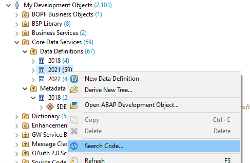

Version 1.4.0
ABAP Code Search
Features
Adds new option
Expand Includes
for program types, that allows searching of includes of a program
Enhance filter transfer if Code Search is called from context menu of Project Explorer
The Code Search Dialog can now also be opened from the following folder types in the Project Explorer:
Type Folder (type)
Type Group Folder (group)
Date (created, month, date)
User (owner)
Application Component (appl)
Package (package)

Figure 1:
Context Menu Click on
Created
-folder in Project Explorer
Figure 2:
Transferred Filters in Code Search Dialog
Only the relevant filters for the Code Search will be transferred to the search dialog.